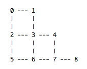

enum general enumeration tool, can be used for a variety of combinatorial problems
Part of: miSCellaneous
Method enum implements a basic backtracking search suited for a number of counting and
optimization problems. For specification of search criteria a boolean-valued Function
has to be passed.
Some Important Issues Regarding method enum
The method applies to Integers indicating the recursion depth.
Due to the nature of combinatorial problems with an often rapid growth of solutions
and/or enumeration steps with increase of size, it is recommended to start
examples with low numbers to avoid hangs.
Integer::enum (pool, function, evalAtZero, type, order, maxNum)
Returns solutions of the problem, which is defined by function,
as an Array of SequenceableCollections (size = receiver).
pool - SequenceableCollection of items to be considered for
possible solutions.
If type equals 0 the same pool is taken for all indices of possible solutions,
if type equals 1 a SequenceableCollection of pools might be passed.
The existence of an additional type arg is necessary as it might also be desirable
to consider SequenceableCollections as single items of possible solutions.
function - Boolean-valued Function to be evaluated at currentIndex.
For many applications it is not necessary to evaluate at index 0
(so per default evalAtZero set to false), the Function is not evaluated
and the item is supposed to be considered as first element of a possible solution.
From current state the Function is passed the following args to specify search:
item - Current item to be checked
currentIndex - Current enumeration level,
between 1 (resp. 0 in case evalAtZero set to true) and receiver - 1
currentCol - Contains current collection of items already chosen
at indices up to currentIndex - 1, for efficiency reasons
length of this collection equals receiver and items indexed at
current or higher enumeration level might stem from earlier enumeration steps.
indexCol - Current collection of indices (of items from pool) already chosen,
for efficiency reasons length of this collection equals receiver and indices at
current or higher enumeration level might stem from earlier enumeration steps.
evalAtZero - Boolean. Determines if function will be evaluated at index 0.
Defaults to false.
type - Must be 0 or 1. Determines if pool should be taken for all items (0, default)
or specified per index (1).
order - Boolean. Determines if search should follow order of items given in pool
or a search order is randomly chosen. Defaults to true.
For search of a single random solution one would set order to false and
maxNum to 1.
maxNum - Integer. Maximum number of solutions to be searched for.
Defaults to inf.
Example 1: Basic enumerations, Subsets
// Listing all tuples from a given collection.
// Note that this kind of complete enumeration
// can be done with method allTuples more efficiently.
3.enum([1,2])
-> [ [ 1, 1, 1 ], [ 1, 1, 2 ], [ 1, 2, 1 ], [ 1, 2, 2 ],
[ 2, 1, 1 ], [ 2, 1, 2 ], [ 2, 2, 1 ], [ 2, 2, 2 ] ]
// type 1 for specified pool(s)
// receiver must equal size of passed pools
3.enum([[1,2], [-1,-2], [\a,\b]], type: 1)
-> [ [ 1, -1, a ], [ 1, -1, b ], [ 1, -2, a ], [ 1, -2, b ],
[ 2, -1, a ], [ 2, -1, b ], [ 2, -2, a ], [ 2, -2, b ] ]
// strictly monotone tuples
// note that function is evaluated only for i > 0,
// so no problem to write i-1
3.enum((1..4), { |x,i,col| x > col[i-1] });
-> [ [ 1, 2, 3 ], [ 1, 2, 4 ], [ 1, 3, 4 ], [ 2, 3, 4 ] ]
// Above is equivalent to the task of finding all
// k-subsets of a given set of n elements.
// The results are lexically ordered.
// For an arbitrary pool, not necessarily numbers,
// you can use the index collection arg within the Function.
3.enum([\a, \b, \c, \d], { |x,i,col,icol| icol[i] > icol[i-1] });
-> [ [ a, b, c ], [ a, b, d ], [ a, c, d ], [ b, c, d ] ]
// The number of k-subsets of a set of length n equals n! / k! / (n-k)!
// You might want to check before a complete enumeration:
~subsetNum = { |n, k|
var p = 1;
k.do { |i| p = p * (n - k + i + 1) / (i + 1) };
p
};
~subsetNum.(18,5)
-> 8568
// In principle search for tuples with certain features (not only subsets)
// can always be done with using allTuples and filtering out afterwards,
// but this is only feasible for small n.
// E.g. n = 18 and k = 5 requires calculating 1889568 (n**k) tuples first.
// Furthermore method allTuples defaults to a maximum number of 16364 (2**14).
// So (18**5).log2.ceil (21) gives the exponent of 2 to pass
{
((1..18)!5).allTuples((2**21).asInteger)
.select { |y| y.every { |x,i| (i == 0) or: { y[i-1] < y[i] } } }.size.postln;
}.bench
-> 8568
time to run: 6.6191733989999 seconds.
6.6191733989999
{ 5.enum((1..18), { |x,i,col| x > col[i-1] }).size.postln; }.bench
-> 8568
time to run: 0.10966498400012 seconds.
0.10966498400012
// Tuples without repetitions -
// keep in mind that passed collection is of full length in each step,
// so we have to restrict to the indices up to i-1.
// Writing col[(0..i-1)] means that a new Array is generated in
// every enumeration step. This might be a bottleneck
// with a huge number of steps and could be optimized.
3.enum((1..4), { |x,i,col| col[(0..i-1)].includes(x).not });
-> [[ 1, 2, 3 ], [ 1, 2, 4 ], [ 1, 3, 2 ], [ 1, 3, 4 ], [ 1, 4, 2 ], [ 1, 4, 3 ],
[ 2, 1, 3 ], [ 2, 1, 4 ], [ 2, 3, 1 ], [ 2, 3, 4 ], [ 2, 4, 1 ], [ 2, 4, 3 ],
[ 3, 1, 2 ], [ 3, 1, 4 ], [ 3, 2, 1 ], [ 3, 2, 4 ], [ 3, 4, 1 ], [ 3, 4, 2 ],
[ 4, 1, 2 ], [ 4, 1, 3 ], [ 4, 2, 1 ], [ 4, 2, 3 ], [ 4, 3, 1 ], [ 4, 3, 2 ]]
Example 2: Melodic Shapes
// This follows an idea by Fabrice Mogini
// Given a sequence of pitches, find all melodies of same shape,
// here just understood as up-and-down movement,
// using the given pitches without repetition.
// The Function has to check whether
// 1.) there are no repetitions
// 2.) the difference to the last item is of same signum as in the original pitch sequence
// keep in mind that, as always, passed collection is of full length in each step,
// so we have to restrict to the indices up to i-1
(
// assuming no pitches repeated
m = [60, 65, 62, 69, 71];
d = m.differentiate.sign;
f = { |x,i,col| col[(0..i-1)].includes(x).not && ((x - col[i-1]).sign == d[i]) };
m.size.enum(m, f);
)
--> [ [ 60, 65, 62, 69, 71 ], [ 60, 69, 62, 65, 71 ], [ 60, 71, 62, 65, 69 ],
[ 65, 69, 60, 62, 71 ], [ 65, 71, 60, 62, 69 ], [ 62, 65, 60, 69, 71 ],
[ 62, 69, 60, 65, 71 ], [ 62, 71, 60, 65, 69 ], [ 69, 71, 60, 62, 65 ] ]
Example 3: Partitions of Integers, Scales
// list all partitions of a given integer a into n summands
(
a = 10;
n = 5;
// storage of partial sums
// ith element will represent sum up to index i-1
p = 0!(n+1);
// Function should also consider case i = 0
f = { |x,i,col|
var order = (i > 0).if { x >= col[i-1] }{ true };
p[i+1] = p[i] + x;
order and: {
(i + 1 < n).if {
// check if partial sums are not too large
(n - i) * x + p[i] <= a
}{
// partition check at last index i == n-1
p[i+1] == a
}
}
};
// true causes check also at index 0
5.enum((1..10), f, true);
)
-> [ [ 1, 1, 1, 1, 6 ], [ 1, 1, 1, 2, 5 ], [ 1, 1, 1, 3, 4 ], [ 1, 1, 2, 2, 4 ],
[ 1, 1, 2, 3, 3 ], [ 1, 2, 2, 2, 3 ], [ 2, 2, 2, 2, 2 ] ]
// in above Function the given integer and the number of summands are hardcoded.
// For a general purpose tool better make a function constructor,
// also build in an arg that determines if solutions should be ascending or not
(
// Function to make boolean value Function depending on sum a and number of summands n
g = { |a,n,ascending = true|
var p = 0!(n+1);
{ |x,i,col|
var order = ((i > 0) && ascending).if { x >= col[i-1] }{ true };
p[i+1] = p[i] + x;
order and: {
(i + 1 < n).if {
// check if partial sums are not too large
ascending.if { x }{ 1 } * (n - i) + p[i] <= a
}{
// partition check at last index i == n-1
p[i+1] == a
}
}
}
};
// Function for listing all partitions of number a with n summands
h = { |a,n,pool,ascending = true| n.enum(pool, g.(a,n,ascending), true) };
)
// partitions of number 10 consisting of 5 summands
// monotone tuples are demanded (so reorder of tuples is neglected)
h.(10, 5, (1..10))
-> [ [ 1, 1, 1, 1, 6 ], [ 1, 1, 1, 2, 5 ], [ 1, 1, 1, 3, 4 ], [ 1, 1, 2, 2, 4 ],
[ 1, 1, 2, 3, 3 ], [ 1, 2, 2, 2, 3 ], [ 2, 2, 2, 2, 2 ] ]
// partitions of number 12, taking order into account (not ascending),
// lists all possible scales of a certain number of pitches,
// given as interval arrays
// this gives all scales of 7 tones with stepwidth from 1 to 3 semitones.
// Result contains rotations of interval arrays that are different,
// e.g. major [2,2,1,2,2,2,1] and dorian [2,1,2,2,2,1,2]
x = h.(12, 7, (1..3), false);
x.size;
-> 266
Example 4: Graphs
// undirected graph with 9 nodes

(
// graph represented as array of possible successor nodes
g = [[1,2], [0,3], [0,3,5], [1,2,4,6], [3,7], [2,6], [3,5,7], [4,6,8], [7]];
// Function for finding unused nodes to be connected
f = { |x,i,col| col[(0..i-1)].includes(x).not and: { g[col[i-1]].includes(x) } };
// search for all paths using each node exactly once
9.enum((0..8), f)
)
-> [ [ 1, 0, 2, 5, 6, 3, 4, 7, 8 ], [ 4, 3, 1, 0, 2, 5, 6, 7, 8 ], [ 6, 5, 2, 0, 1, 3, 4, 7, 8 ],
[ 8, 7, 4, 3, 1, 0, 2, 5, 6 ], [ 8, 7, 4, 3, 6, 5, 2, 0, 1 ], [ 8, 7, 6, 5, 2, 0, 1, 3, 4 ] ]
// give only one random solution - here path of length 8
8.enum((0..8), f, order: false, maxNum: 1)
-> [ [ 0, 1, 3, 4, 7, 6, 5, 2 ] ]